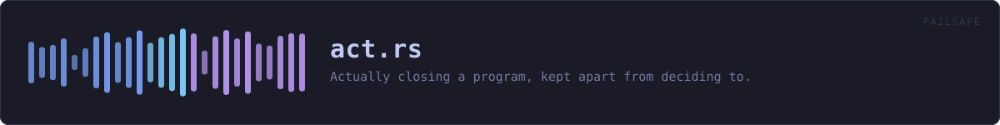

crates/veilvoice-failsafe/src/act.rs
veilvoice-failsafe · 470 lines · read the source here · or on GitHub
Actually closing a program, kept apart from deciding to.
Why this is its own file
Everything in crate is arithmetic over a list: it decides, and it can be tested without a machine. This is the only part that reaches out and ends somebody's program, and separating the two means the decision can be reasoned about on its own and this can be short enough to read in one go.
The check is made twice, on purpose
crate::Guard::look already worked out whether a program may be closed, and close checks again before it acts. That is not redundancy for its own sake: the two are reached through different paths, a future caller could compute closeable wrongly or not at all, and the cost of being wrong here is ending somebody's desktop session. A guard that refuses at the last step as well as the first is a guard that cannot be talked past by a mistake upstream.
In plain words
This is the part that closes a program that picked up your real microphone. It checks one last time that the program is safe to close — never VeilVoice itself, never anything belonging to the operating system — and it says what it did either way.
WHAT THIS FILE CONTAINS
470 lines defining 5 functions (1 public), 0 types and 0 constants. Everything below is read out of the source, so it cannot disagree with the code.
What happens when it runs. These are the ways in: public, and nothing else in this file calls them, so they are what an outside caller reaches first.
closeline 169 — Close a program, having decided it should be closed.
reachesfile_name,still_named
WHAT CALLS WHAT
The functions this file defines, and the calls between them. An edge means the callee's name appears, called, inside the caller's body — a syntactic reading, not a type-resolved one.
The same graph as Mermaid source
%%{init: {"theme":"base","themeVariables":{"background":"#1a1b26","primaryColor":"#1f2335","primaryTextColor":"#c0caf5","primaryBorderColor":"#7aa2f7","secondaryColor":"#16161e","tertiaryColor":"#16161e","lineColor":"#737aa2","textColor":"#c0caf5","mainBkg":"#1f2335","nodeBorder":"#7aa2f7","clusterBkg":"#16161e","clusterBorder":"#2f3549","fontFamily":"ui-monospace, SFMono-Regular, Consolas, monospace","fontSize":"14px"}}}%%
flowchart TD
n_file_name["file_name<br/>line 31"]
n_still_named["still_named<br/>line 51"]
n_run_state["run_state<br/>line 76"]
n_still_named["still_named<br/>line 106"]
n_close(["close<br/>line 169"])
n_close --> n_file_name
n_close --> n_still_named
n_still_named --> n_file_name
click n_file_name href "https://github.com/tilas01/veilvoice/blob/main/crates/veilvoice-failsafe/src/act.rs#L31" "open the source"
click n_still_named href "https://github.com/tilas01/veilvoice/blob/main/crates/veilvoice-failsafe/src/act.rs#L51" "open the source"
click n_run_state href "https://github.com/tilas01/veilvoice/blob/main/crates/veilvoice-failsafe/src/act.rs#L76" "open the source"
click n_still_named href "https://github.com/tilas01/veilvoice/blob/main/crates/veilvoice-failsafe/src/act.rs#L106" "open the source"
click n_close href "https://github.com/tilas01/veilvoice/blob/main/crates/veilvoice-failsafe/src/act.rs#L169" "open the source"
classDef entry fill:#1f2335,stroke:#7aa2f7,color:#c0caf5
class n_close entry
classDef helper fill:#1f2335,stroke:#bb9af7,color:#c0caf5
class n_file_name,n_still_named,n_run_state,n_still_named helperThis site loads no third-party script, so it cannot run Mermaid; the diagram above is the same nodes and edges drawn by the generator instead. GitHub renders the source below directly.
ITEMS
| Item | Line | Documentation |
|---|---|---|
file_name fn | 31 | A program's own name, without the path it was found at. |
still_named fn | 51 | Whether this process id still belongs to this program. |
run_state fn | 76 | The one-letter run state in a line of /proc/<pid>/stat. |
still_named fn | 106 | Whether this process id still belongs to this program and is running. |
close pub fn | 169 | Close a program, having decided it should be closed. |